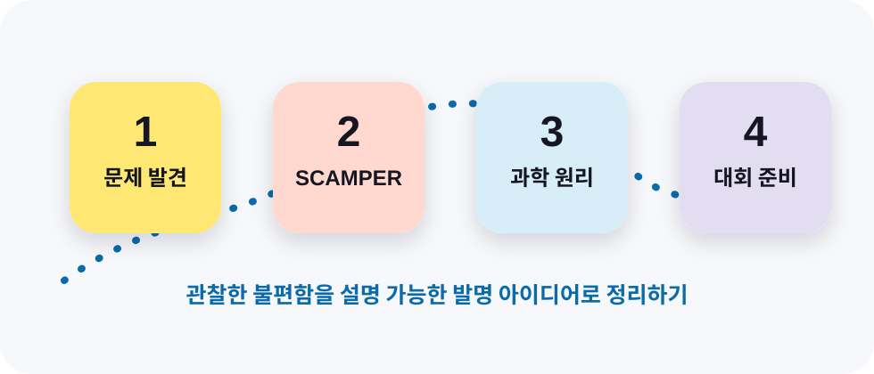

레고에듀케이션 청라스마트러닝센터
STEAMedu invention note
과학 탐구·발명 아이디어 작성 템플릿
연구 동기 - 연구 목적 - 활용 방법(과학적 원리) - 기대 효과

1연구 동기생활 속 불편함이나 궁금한 점을 관찰하고 왜 탐구하려는지 정리합니다.
2연구 목적무엇을 해결하거나 확인하고 싶은지 한 문장으로 분명하게 세웁니다.
3활용 방법(과학적 원리)아이디어가 어떻게 쓰이고 어떤 과학 원리로 작동하는지 연결합니다.
4기대 효과누구에게 어떤 도움이 되고 앞으로 어떻게 발전할 수 있는지 정리합니다.
1문제 발견하기
생활 속 불편함을 관찰하고 문제로 정리하기
2문제 해결하기 (SCAMPER)
질문을 바꿔 가며 해결 아이디어 넓히기
5발명대회 제출 내용 정리하기
작품 설명을 한눈에 보이게 완성하기
6발표 준비와 제출 전 점검
설명은 짧게, 근거는 분명하게